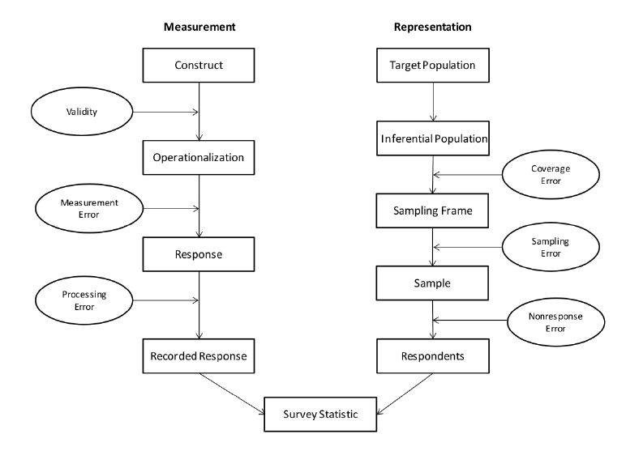
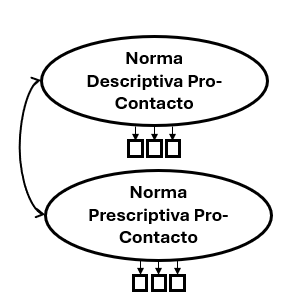

load("Base_polarizacion_escalas.Rdata")
library(lavaan)
cfa <- '
# -----------------------------------------------
# Variables latentes
# -----------------------------------------------
norm_descr_pro_cont =~ Q10_1 + Q10_2 + Q10_3
norm_pres_pro_cont =~ Q15_1 + Q15_2 + Q15_3
# Covarianza
norm_descr_pro_cont ~~ norm_pres_pro_cont
'
fit_cfa <- cfa(cfa, data = df)Modelos de ecuaciones estructurales
https://github.com/fedediazr/Clase-SEM-fdr
Federico Díaz Recart
Contenidos
Introducción
Modelo de medición
- Error de medición
- Variable latente
- CFA (Análisis factorial confirmatorio)
Modelo estructural
- Path analysis (Variables observadas)
- Modelo de ecuaciones estructurales: Combinación entre modelo de medición y modelo estructural
Introducción: ¿Qué es SEM?
Más que una técnica, los modelos de ecuaciones estructurales son una familia de métodos que combinan:
Modelos de medición: Permiten medir y evaluar como se relacionan un conjunto de variables observadas y si estas miden un constructo teórico de interés
Modelos estructurales: Permite evaluar si un conjunto de constructos se relacionan según un modelo teórico propuesto
Es un conjunto de métodos comprensivos para la cuantificación y testeo de teorías sustantivas
Ejemplo: Normas sociales y polarización

González, R., Díaz, F., Fuenzalida, D., Álvarez, A., Lay, S., Carvacho, H., & Manzi, J. (2025, May 22–23). Social norms and affective polarization in political contexts [Conference presentation]. Interdisciplinary Conference on Social Norms, Cohesion, and (De)Polarization, Utrecht, Netherlands.
1: Modelo de medición
Error de medición
Una de las características más importantes de los modelos SEM es que toman en cuenta el error de medición.
Dos fuentes de error en encuestas: Medición (cómo se mide el fenómeno) y Representación (a quiénes se logra medir).
- Medición: El constructo teórico que se quiere medir se transforma en preguntas (operacionalización). Las respuestas pueden verse afectadas por problemas de validez, error de medición y error de procesamiento.
Error de medición
- Representación: Desde la población objetivo se define una población inferencial, un marco muestral y una muestra. En cada paso pueden surgir errores de cobertura, muestreo y no respuesta.
Modelos SEM nos permiten separar la varianza asociada al puntaje “real” de un constructo de la varianza asociada a error de medición.
Error de medición
Total survey error approach
Error de medición
Por lo tanto, indicadores individuales pueden ser insuficientes para medir conceptos complejos, especialmente en ciencias sociales:
- Clase social
- Confianza social
- Actitudes hacia la democracia
- Actitudes punitivas
- Creencia en conspiraciones
- Bienestar subjetivo
Variable latente
¿Cómo los modelos SEM corrigen el error de medición?
SEM utiliza variables latentes (constructos no observados, p. ej., inteligencia).
Estas se estiman a partir de múltiples variables observadas (ítems, puntajes).
Separa la parte confiable (puntaje verdadero) del error de medición.
Modela relaciones entre constructos libres de error. Entregando estimaciones menos sesgadas que usar variables observadas directamente.
Variable latente
¿Qué es una variable latente?
Constructos teóricos no observados y que no pueden ser medidos directamente pero que existen
Son “inferidas” a través de múltiples variables que actúan como manifestaciones del constructo.
Por ejemplo, no podemos medir directamente depresión, pero podemos aproximarnos a través de la medición de distintos síntomas (PHQ9).
Variable latente
Análisis factorial confirmatorio
- Técnica multivariante de análisis de interdependencia entre variables
- Permite estudiar interrelación de un número de variables observadas
- Estas variables se agrupan en un número reducido de factores (variable latente)
- Validación de instrumentos
- Derivación de puntajes
Análisis factorial confirmatorio
Ejemplo aplicado: ¿Corresponden las normas descriptivas pro contacto y las normas prescriptivas pro contacto a dos dimensiones distintas?
Variables
Indique el grado de acuerdo o desacuerdo con las siguientes afirmaciones
- Las personas de [INGROUP] que conozco valorarían que yo tenga amistades de [OUTGROUP].
- Las personas de [INGROUP] que conozco me estimulan a que me junte con personas de [OUTGROUP].
- Las personas de [INGROUP] que conozco valorarían que yo colabore con personas de [OUTGROUP].
- Es común que las personas de [INGROUP] tengan amistades de [OUTGROUP].
- Con frecuencia las personas de [INGROUP] se juntan con personas de [OUTGROUP].
- Con frecuencia las personas de [INGROUP] colaboran con personas de [OUTGROUP].
Pasos
- Especificación del modelo
- Evaluación de ajuste
- Cargas factoriales
Especificación del modelo
- el operador =~ significa “es manifestado por”
- Tenemos 2 variables latentes, manifestadas por 3 items cada una
- Para ajustar el modelo utilizamos el comando cfa
Ajuste del modelo
chisq df pvalue cfi rmsea tli
41.392 8.000 0.000 0.978 0.084 0.958 - χ² (p < .05): indica discrepancia significativa, pero es sensible al tamaño muestral.
- CFI (.978): muy buen ajuste del modelo.
- TLI (.958): buen ajuste, penaliza complejidad.
- RMSEA (.084): ajuste aceptable–limítrofe.
Conclusión: ajuste global bueno, pese al χ² significativo.
Cargas factoriales
- Las cargas factoriales indican qué tan fuertemente cada ítem observado está asociado con el factor latente que pretende medir.
- Es el coeficiente de regresión que indica cuánto cambia el ítem cuando el factor aumenta una unidad.
nrm_d__ nrm_p__
Q10_1 0.785 0.000
Q10_2 0.915 0.000
Q10_3 0.713 0.000
Q15_1 0.000 0.777
Q15_2 0.000 0.721
Q15_3 0.000 0.781- Todas son altas (≈ .71–.92), indicando que los ítems representan bien sus factores latentes.
2: Modelo estructural
Path analysis (Análisis de senderos)
- Es un modelo de relaciones de dependencia entre varias variables
- Utiliza variables observadas o promedios de ítemes
- No evalúa un modelo de medición

Caughlin, D. E. (2022). R for HR: An introduction to human resource analytics using R.
Path analysis (Análisis de senderos)
- Es una extensión de la regresión lineal
- Incorpora varias regresiones en un mismo modelo, permitiendo evaluar
- Efectos directos
- Efectos indirectos
- Mediación y efectos totales
Path analysis (Análisis de senderos)
Supuestos
- Tamaño de muestra grande: Al menos 10 a 20 casos por parametro, idealmente N>200
- Relaciones lineales entre variables
- Identificación del modelo basado en teoría
- Variables continuas
Modelo de ecuaciones estructurales
- Combinan modelo de medición y modelo estructural
- Hoy nos vamos a fijar en modelos que combinan análisis de senderos con análisis factorial confirmatorio
- En síntesis: Análisis de senderos de variables latentes y observadas
- Estos modelos son también llamados modelos MIMIC (Multiple Indicators Multiple Causes)
Modelo de ecuaciones estructurales
Efecto directo, indirecto y total
Efecto directo: influencia de una variable sobre otra sin mediadores (por ejemplo, 𝑋→𝑌
Efecto indirecto: influencia de una variable sobre otra que ocurre a través de una o más variables mediadoras (por ejemplo, 𝑋→𝑀→𝑌)
- Matemáticamente, es el producto de los coeficientes de los caminos involucrados (ej.: 𝑎×𝑏)
Efecto total: efecto global de una variable sobre otra, que combina todas las vías posibles.
Modelo de ecuaciones estructurales
Supuestos
- Tamaño de muestra grande: Al menos 10 a 20 casos por parametro, idealmente N>200
- Relaciones lineales entre variables
- Identificación del modelo basado en teoría
- Variables continuas
Modelo de ecuaciones estructurales
Especificación del modelo
Cupani (2012) sugiere varias estrategias posibles:
Modelización confirmatoria: Se especifica un solo modelo alineado con lo que se espera teóricamente.
Modelos rivales: Se especifican varios modelos distintos para que “compitan” en términos de ajuste
Desarrollo del modelo: Se parte de un modelo simple y se va mejorando, ya sea el modelo de medición o las relaciones estructurales entre variables
Modelo de ecuaciones estructurales
Evaluación del ajuste
Igual que en los modelos CFA
- Chi cuadrado
- RMSEA
- CFI
Modelo de ecuaciones estructurales
Interpretación de resultados
- Coeficientes beta no estandarizados: Efecto que cada aumento en una unidad de la variable independiente tiene en la dependiente
- Coeficientes beta estandarizados: Efectos que cada aumento en una desviación estándar de la variable independiente tiene en la dependiente (en términos de desviaciones estándar)
- Significación de cada coeficiente: p<0,05, rechazamos hipótesis nula de que el beta es igual a 0 a un 95% de confianza
Ejemplo aplicado
González, R., Díaz, F., Fuenzalida, D., Álvarez, A., Lay, S., Carvacho, H., & Manzi, J. (2025, May 22–23). Social norms and affective polarization in political contexts [Conference presentation]. Interdisciplinary Conference on Social Norms, Cohesion, and (De)Polarization, Utrecht, Netherlands.
Ejemplo aplicado
Variables
- Normas prescriptivas pro contacto (ej: “Las personas de [INGROUP] que conozco valoran tener amistades con gente de [OUTGROUP])
- Normas descriptivas pro contacto (ej: “Es común que las personas de [INGROUP] tengan amistades de [OUTGROUP])
- Contacto intergrupal (ej: ¿Con qué frecuencia interactúa con personas de [OUTGROUP])
- Polarización ideológica: Medida como la distancia del punto medio en una serie de problemáticas (Aborto, conflicto indígena, rol estado vs empresa)
Especificación del modelo
m1 <- '
## -----------------------------------------------
# Variables latentes
# -----------------------------------------------
norm_descr_c =~ Q10_1 + Q10_2 + Q10_3
norm_prescr_c =~ Q15_1 + Q15_2 + Q15_3
contact =~ Cantidad_contacto + Contacto_positivo
# -----------------------------------------------
# Relaciones estructurales (Mediación)
# -----------------------------------------------
# Efecto de normas descriptivas y prescriptivas sobre contact (a)
contact ~ a*norm_descr_c + a2*norm_prescr_c
# Efecto de contact sobre polarización (b)
id_pol ~ b*contact + c*norm_descr_c + c2*norm_prescr_c
# Covarianza
norm_descr_c ~~ norm_prescr_c
# Covarianza items
Q10_1 ~~ Q15_1
Q10_2 ~~ Q15_2
Q10_3 ~~ Q15_3
# -----------------------------------------------
# Efectos definidos (Indirecto y Total)
# -----------------------------------------------
indirect1 := a*b
indirect3 := a2*b
total1 := a * b + c
total3 := a2 * b + c2
'
fit_m1 <- sem(m1, data = df, missing="FIML")Interpretación de resultados
lavaan 0.6-19 ended normally after 61 iterations
Estimator ML
Optimization method NLMINB
Number of model parameters 35
Number of observations 591
Number of missing patterns 5
Model Test User Model:
Test statistic 47.394
Degrees of freedom 19
P-value (Chi-square) 0.000
Model Test Baseline Model:
Test statistic 1745.124
Degrees of freedom 36
P-value 0.000
User Model versus Baseline Model:
Comparative Fit Index (CFI) 0.983
Tucker-Lewis Index (TLI) 0.969
Robust Comparative Fit Index (CFI) 0.983
Robust Tucker-Lewis Index (TLI) 0.968
Loglikelihood and Information Criteria:
Loglikelihood user model (H0) -6191.029
Loglikelihood unrestricted model (H1) -6167.332
Akaike (AIC) 12452.058
Bayesian (BIC) 12605.422
Sample-size adjusted Bayesian (SABIC) 12494.308
Root Mean Square Error of Approximation:
RMSEA 0.050
90 Percent confidence interval - lower 0.033
90 Percent confidence interval - upper 0.068
P-value H_0: RMSEA <= 0.050 0.460
P-value H_0: RMSEA >= 0.080 0.003
Robust RMSEA 0.051
90 Percent confidence interval - lower 0.033
90 Percent confidence interval - upper 0.069
P-value H_0: Robust RMSEA <= 0.050 0.448
P-value H_0: Robust RMSEA >= 0.080 0.003
Standardized Root Mean Square Residual:
SRMR 0.031
Parameter Estimates:
Standard errors Standard
Information Observed
Observed information based on Hessian
Latent Variables:
Estimate Std.Err z-value P(>|z|) Std.lv Std.all
norm_descr_c =~
Q10_1 1.000 0.713 0.779
Q10_2 1.203 0.060 20.208 0.000 0.858 0.922
Q10_3 0.945 0.054 17.529 0.000 0.673 0.707
norm_prescr_c =~
Q15_1 1.000 0.639 0.777
Q15_2 0.941 0.062 15.132 0.000 0.601 0.726
Q15_3 1.091 0.069 15.871 0.000 0.698 0.771
contact =~
Cantidad_cntct 1.000 0.545 0.844
Contacto_postv 0.729 0.137 5.336 0.000 0.397 0.442
Regressions:
Estimate Std.Err z-value P(>|z|) Std.lv Std.all
contact ~
nrm_dscr_ (a) 0.273 0.047 5.807 0.000 0.356 0.356
nrm_prsc_ (a2) 0.180 0.053 3.404 0.001 0.211 0.211
id_pol ~
contact (b) -0.641 0.236 -2.714 0.007 -0.350 -0.229
nrm_dscr_ (c) -0.013 0.132 -0.097 0.923 -0.009 -0.006
nrm_prsc_ (c2) 0.223 0.143 1.557 0.119 0.143 0.093
Covariances:
Estimate Std.Err z-value P(>|z|) Std.lv Std.all
norm_descr_c ~~
norm_prescr_c 0.244 0.029 8.508 0.000 0.536 0.536
.Q10_1 ~~
.Q15_1 0.025 0.017 1.504 0.133 0.025 0.084
.Q10_2 ~~
.Q15_2 -0.027 0.016 -1.715 0.086 -0.027 -0.132
.Q10_3 ~~
.Q15_3 0.077 0.020 3.802 0.000 0.077 0.199
Intercepts:
Estimate Std.Err z-value P(>|z|) Std.lv Std.all
.Q10_1 3.371 0.038 89.599 0.000 3.371 3.686
.Q10_2 3.156 0.038 82.478 0.000 3.156 3.394
.Q10_3 3.100 0.039 79.168 0.000 3.100 3.257
.Q15_1 2.973 0.034 87.857 0.000 2.973 3.614
.Q15_2 2.404 0.034 70.555 0.000 2.404 2.902
.Q15_3 2.593 0.037 69.591 0.000 2.593 2.864
.Cantidad_cntct 2.664 0.027 100.185 0.000 2.664 4.121
.Contacto_postv 3.008 0.037 80.333 0.000 3.008 3.346
.id_pol 2.782 0.063 44.224 0.000 2.782 1.822
Variances:
Estimate Std.Err z-value P(>|z|) Std.lv Std.all
.Q10_1 0.328 0.026 12.578 0.000 0.328 0.393
.Q10_2 0.129 0.026 4.939 0.000 0.129 0.149
.Q10_3 0.453 0.031 14.717 0.000 0.453 0.500
.Q15_1 0.268 0.025 10.547 0.000 0.268 0.396
.Q15_2 0.325 0.026 12.351 0.000 0.325 0.473
.Q15_3 0.333 0.030 10.989 0.000 0.333 0.406
.Cantidad_cntct 0.120 0.051 2.369 0.018 0.120 0.288
.Contacto_postv 0.650 0.047 13.906 0.000 0.650 0.805
.id_pol 2.227 0.136 16.385 0.000 2.227 0.955
norm_descr_c 0.508 0.049 10.462 0.000 1.000 1.000
norm_prescr_c 0.409 0.041 9.891 0.000 1.000 1.000
.contact 0.222 0.051 4.373 0.000 0.748 0.748
Defined Parameters:
Estimate Std.Err z-value P(>|z|) Std.lv Std.all
indirect1 -0.175 0.067 -2.627 0.009 -0.125 -0.082
indirect3 -0.115 0.055 -2.087 0.037 -0.074 -0.048
total1 -0.188 0.118 -1.594 0.111 -0.134 -0.088
total3 0.108 0.137 0.784 0.433 0.069 0.045¡Gracias!
fdr@alumni.uc.cl